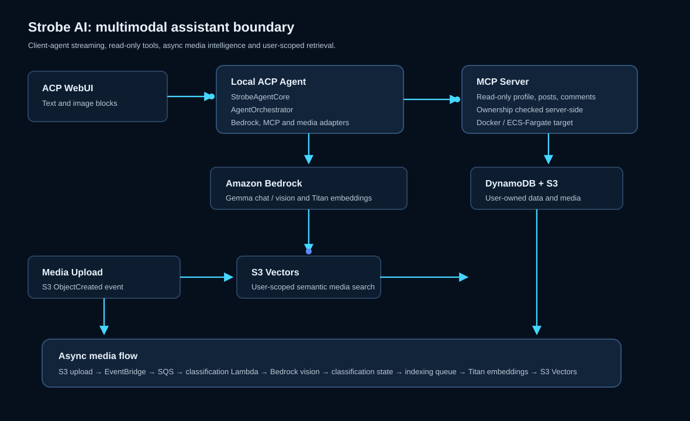

01 / Selected Work
Software, cloud, data and applied AI projects.
These case studies are written from repository evidence and public-safe project context. Private industry work is deliberately sanitised.
1 · Flagship
Strobe AI
Cloud-native multimodal assistant for a social media backend.
Problem: query personal media and post context without uncontrolled model access.
Solution: ACP chat layer, read-only MCP tools, user-scoped retrieval and async AWS media processing.
Notable feature: 229 repository-reported automated tests across backend, ACP and MCP.
Node.js 22AWSBedrockACPMCP

2 · Private Industry Capstone
AI-Assisted Scientific Research Synthesis
Sanitised case study on agent and retrieval workflows for scientific research synthesis.
Problem: make historical scientific evidence easier to retrieve, compare and synthesise.
Feature: separate research questions, analytical tasks and retrieval-only queries.
PythonRAGE5 retrievalReranking
3 · ML Application
Full-Stack Predictive Risk Application
A PyQt6 credit-risk application connecting ML workflow, UI, services and reporting.
Problem: turn a prediction workflow into usable software.
Feature: XGBoost, LightGBM and calibrated Logistic Regression training workflow.
PythonPyQt6Scikit-learnMySQL
4 · Algorithms
Data-Oriented Graph Optimisation Engine
A C# routing engine focused on graph traversal, memory layout and search behaviour.
Problem: plan paths through an incrementally discovered graph.
Feature: flat arrays, BFS, Dijkstra, custom heap and custom hash table.
C#BFSDijkstraData-oriented design